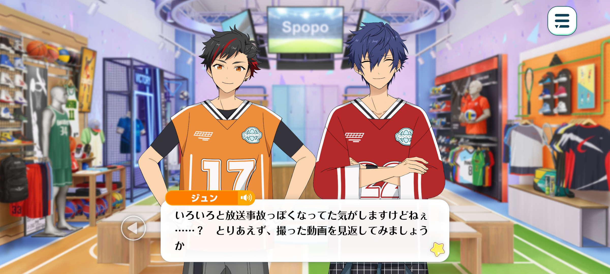
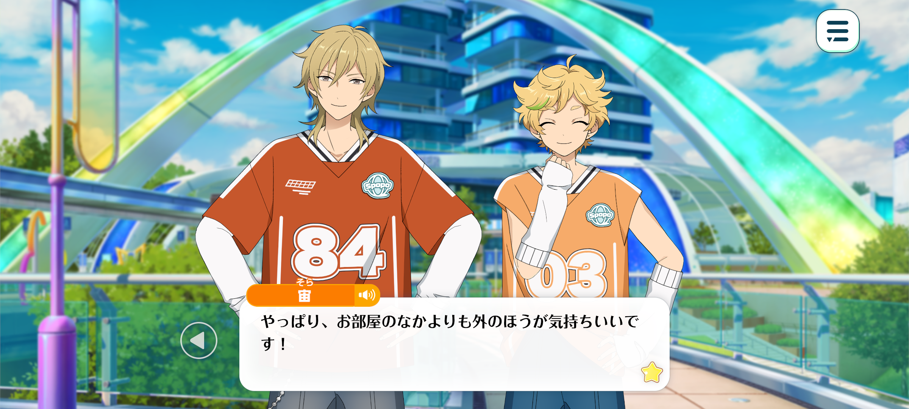
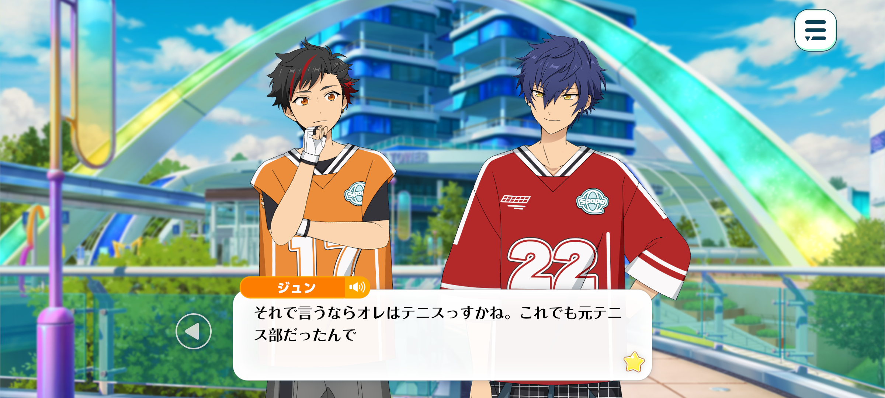

Scout! Ambassador Spopo
Passion Is The Key To Appeal – Chapter 3



Tetora: ...Whelp, that’s us done, but I’m not sure how well it turned out.
Jun: I feel like we made a lot of mistakes…? Let’s watch it back first and see how it looks.
Sora: Okay! Sora will get the camera!
Kaoru: Ah, thanks, Sora-kun. Right, let's have a look...
Jun: This is… um…
Kaoru: It's certainly... something.
Tetora: It's kinda like one of those lunchtime shopping adverts, isn't it...?
Kaoru: It really does look like an infomercial...!
Jun: It's not bad, exactly, but I'm not sure this is quite the right feel for a fashionable innerwear advert.
It doesn't really fit Spopo's image, either.
Kaoru: Yeah, it’s a bit too comedic…
Tetora: Maybe we should try coming up with some other ideas, then.
Jun: ...Actually, Tetora-kun, didn't you say earlier that you'd be more interested in buying something if you saw someone you admired wearing it?
Tetora: Ah, yeah, I did.
Kaoru: I can see where you're coming from, Tetora-kun, and I do think that could work, but...
Where exactly would we get a professional athlete from?
Jun: Especially a famous one. Unless we've got some pretty incredible connections, or a lot of money to throw around, it'd be difficult to arrange.
Kaoru: Right? ...Rei-kun knows all sorts of people, so I'm sure he could find someone for us. But this isn't an UNDEAD job, after all.
Jun: And even if we did manage to get a professional athlete involved, I can't help wondering what we'd actually be contributing ourselves.
Tetora: Yeah, that's true... Uhhh...
Sora: Hmm...
...Sora's been thinking so hard that he wants to go and run around a bit! Let's go outside and get a change of scenery!
Tetora: Outside? But we haven't decided what we're going to do yet...
Jun: Well, we weren’t exactly getting anywhere on the idea front. Maybe a change of scenery would do us good.
Kaoru: Yeah. Come on then, let’s go outside.

Kaoru:It's nice out here. There's a lovely breeze.
Sora: Being outside is so much nicer than being cooped up indoors!
Hup!
Tetora: Whoa, that was an amazing jump! He jumped right onto that arch…!
Sora: HaHa~♪ Now Sora will jump here! And then over there~♪
Jun: Ah, he's incredibly athletic...
But please be careful up there, alright? If you hurt yourself, it’ll cause trouble for everyone.
Sora: HiHi~♪ Jun-chan-senpai is super kind~. You were worried about Sora last time too, right?
Jun: Well, you can be a bit reckless sometimes, you know? ...And look! You're climbing even higher while we're talking!
Sora: HuHu~, Sora will be careful!
Jun: Take your time, please, and come down slowly, okay? I'll give you a hand if you need one.
Kaoru: Ahaha…
(Sora-kun really is amazingly athletic. Watching him leap about with so much energy... It's hard not to be drawn in by him.)
(Yeah... I can't take my eyes off him.)
…That’s it!
Jun: ...? What’s the matter? You look like you’ve just seen a ghost.
Kaoru: No, it's just... I've had a really obvious idea. One we should've thought of ages ago.
Tetora: An obvious idea?
Kaoru: Yeah. We're trying to promote sportswear, right?
So why don't the four of us play some sports and film ourselves doing it?
It's simple and easy to understand, and even people who aren't particularly sporty will surely be drawn in by watching us having fun and getting active.
And that way, we can appeal to customers without having to bring in a professional athlete.
Sora: Wa! Nice idea~!
Jun: You’re right…
Yeah, why didn’t we think of this sooner…?
I mean, adverts for sports brands usually feature people playing sports, after all.
Tetora: Ahaha... I think we got so caught up in thinking about the clothes that we forgot they're meant to be sportswear in the first place.
I guess that's what happens when you try too hard to come up with something groundbreaking. You end up overthinking it.
Anyway, I’m totally down to do Hakaze-senpai’s idea!
Jun: Me too. We're all pretty sporty, so I think it's a perfect fit.
Sora: Getting to play sports as part of our job sounds awesome! Sora's all for it~♪
Kaoru: Glad we're all in agreement, then. Let's do it!

Tetora: So, what sports should we play, then? I'm in the karate club, so I'm pretty good at karate and other martial arts.
Jun: In that case, I'd go with tennis. I used to be in the tennis club.
Though, to be fair, nobody on the Reimei tennis team took it particularly seriously. We mostly just messed about.
Sora: Sora likes parkour! It's so much fun being able to jump around wherever Sora wants~♪
Kaoru: It's surfing for me, and water sports…
Hmm, we all do different things, don't we? That's a bit of a problem.
Sora: Sora doesn't mind what we play! They all sound fun!
Jun: Yeah, none of those ideas are bad, but... Maybe since we don't have any sports in common, we should try something completely different?
Tetora: Then, maybe something that looks good on video?
Kaoru: I guess a ball sport then?
Sora: Like baseball, or football?
Jun: We haven't got enough people for baseball. We could probably manage a two-a-side game of football, though...
But if we had a goalie on each team, that'd leave us with a one-on-one match. I'd like everyone to have a chance to show what they can do in a short amount of time… Can anyone think of another sport?
Tetora: ...Ah, how about basketball?
Jun: Basketball?
Tetora: Yeah! Basketball looks great on camera, and I reckon it'd still work even with just two players on each team.
And if there's anything we're not sure about, we can always ask Midori-kun or Morisawa-senpai for some advice. I'm sure they'd be happy to help us out ♪
Kaoru: Sounds good to me. What do you two think?
Sora: Sora also wants to play basketball with everyone!
Jun: Yeah, I'm happy with that.
Tetora: Yes! Then let's have a basketball match with the Spopo members!